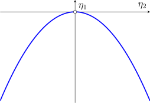

1.6 The Exponential Family
Most of the distributions met so far share a common structure, and for that structure complete sufficient statistics can be written down at once.
Definition 1.6.1. A random vector \(X\) has a distribution in the exponential family if its probability (density) function has the form \begin {equation} \label {eq:expfamily} f_\theta (x) = C(\theta )\exp \left \{\sum ^k_{j = 1} q_j(\theta )T_j(x)\right \}h(x) \end {equation} for functions \(C(\theta )>0\), \(q_j(\theta )\), \(T_j(x)\) and \(h(x)\ge 0\), where the set \(\{x : h(x)>0\}\) does not depend on \(\theta \). The statistic \((T_1(X), \dots , T_k(X))\) is the natural sufficient statistic.
The natural sufficient statistic is not unique: multiplying \(T_j\) by a constant and dividing \(q_j\) by the same constant leaves \(f_\theta \) unchanged. The condition on the support excludes families such as \(\text {UNIF}(0, \theta )\), whose indicator \(I(x<\theta )\) cannot be absorbed into the form (1.1).
Example 1.6.2. Show that the natural sufficient statistic \((T_1(X), \dots , T_k(X))\) of (1.1) is sufficient.
Solution. Take \(g(t;\theta ) = C(\theta )\exp \left \{\sum _j q_j(\theta )t_j\right \}\) and the given \(h\). Then \(f_\theta (x) = g(T(x);\theta )h(x)\), and theorem 1.3.4 applies.
Example 1.6.3. Show that \(\text {BIN}(n, \theta )\), with \(n\) known, is an exponential family and find its natural sufficient statistic.
Solution. For \(x = 0, 1, \dots , n\), \[f_\theta (x) = \binom {n}{x}\theta ^x(1 - \theta )^{n - x} = \underbrace {(1 - \theta )^n}_{C(\theta )}\exp \left \{\underbrace {\ln \frac {\theta }{1 - \theta }}_{q(\theta )}\cdot \underbrace {x}_{T(x)}\right \}\underbrace {\binom {n}{x}}_{h(x)} .\] So the binomial is an exponential family with \(k = 1\) and natural sufficient statistic \(T(X) = X\).
The exponential family is closed under independent sampling.
Theorem 1.6.4. If \(X_1, \dots , X_n\) is a random sample from a distribution of the form (1.1), then the joint probability (density) function is \begin {align*} f_\theta (x_1, \dots , x_n) &= C(\theta )^n\exp \left \{\sum ^k_{j = 1} q_j(\theta )\sum ^n_{i = 1} T_j(x_i)\right \}\\ &\qquad \times \prod ^n_{i = 1}h(x_i), \end {align*}
again of exponential family form, with natural sufficient statistic \(\left (\sum _{i=1}^n T_1(X_i), \dots , \sum _{i=1}^n T_k(X_i)\right )\).
Proof. Multiply the \(n\) densities: the factors \(C(\theta )\) multiply to \(C(\theta )^n\), the exponents add, and the \(h(x_i)\) multiply. □
Example 1.6.5. Show that a random sample from \(\text {POI}(\theta )\) has an exponential family distribution, and find its natural sufficient statistic.
Solution. For one observation, \[f_\theta (x) = \frac {e^{-\theta }\theta ^x}{x!} = \underbrace {e^{-\theta }}_{C(\theta )}\exp \{\underbrace {(\ln \theta )}_{q(\theta )}\,\underbrace {x}_{T(x)}\}\underbrace {\frac {1}{x!}}_{h(x)},\qquad x = 0, 1, \dots .\] By theorem 1.6.4 the sample has the exponential family density \[f_\theta (x_1, \dots , x_n) = e^{-n\theta }\exp \left \{(\ln \theta )\sum x_i\right \}\prod \frac {1}{x_i!},\] with natural sufficient statistic \(\sum X_i\).
1.6.1 The Canonical Form
Definition 1.6.6. Writing \(\eta _j = q_j(\theta )\) in (1.1) gives the canonical form \[f_\eta (x) = C(\eta )\exp \left \{\sum ^k_{j = 1}\eta _jT_j(x)\right \}h(x) .\] The natural parameter space is the set of \(\eta \) for which this can be normalised, \[\Omega _\eta = \left \{\eta : \int \exp \left \{\sum _j\eta _jT_j(x)\right \}h(x)\,dx<\infty \right \},\] with the integral replaced by a sum when \(X\) is discrete.
If the \(T_j\) satisfy a linear constraint, for example \(T_1(x) + T_2(x) = n\) for all \(x\), one of them can be eliminated and the number of terms reduced; otherwise the parameters \(\eta _j\) are not identifiable. The same applies to linear constraints among the \(\eta _j\).
1.6.2 Regular Exponential Families
Definition 1.6.7. \(X\) has a regular exponential family (REF) distribution if its canonical form is of full rank, in the sense that neither the \(T_j\) nor the \(\eta _j\) satisfy a linear constraint, and the natural parameter space contains a \(k\)-dimensional open rectangle.
By theorem 1.6.4, if each \(X_i\) has a REF distribution then so does the sample \((X_1, \dots , X_n)\).
Solution. From example 1.6.3, \(\eta = \ln \frac {\theta }{1 - \theta }\). As \(\theta \) ranges over \((0, 1)\), \(\frac \theta {1-\theta }\) ranges over \((0, \infty )\) and \(\eta \) over \((-\infty , \infty )\). Inverting, \(\theta = \frac {e^\eta }{1 + e^\eta }\) and \(1 - \theta = \frac {1}{1 + e^\eta }\), so the canonical form is \[f_\eta (x) = \left (1 + e^\eta \right )^{-n}e^{\eta x}\binom {n}{x},\qquad \Omega _\eta = \mathbb {R} .\] There is one statistic \(T = X\) and one parameter, with no linear constraints, and \(\Omega _\eta \) contains an open interval. So the binomial is a REF.
1.6.3 Completeness in the Exponential Family
Theorem 1.6.9. If \(X\) has a regular exponential family distribution, then its natural sufficient statistic \((T_1(X), \dots , T_k(X))\) is complete and sufficient.
Sufficiency is example 1.6.2. Completeness rests on the uniqueness of the Laplace transform: \(E_\eta \left [g(T)\right ] = 0\) on an open rectangle of \(\eta \) values says that a certain Laplace transform vanishes on an open set, which forces \(g = 0\). Example 1.5.3 is the case of a binomial, where the transform is a polynomial. A full proof is in Lehmann and Romano, Testing Statistical Hypotheses, theorem 4.3.1.
Example 1.6.10. Let \(X_1, \dots , X_n\) be a random sample from \(N(\mu , \sigma ^2)\). Find a complete sufficient statistic, and the UMVUEs of \(\mu \) and \(\sigma ^2\).
Solution. For one observation, \[f_\theta (x) = \underbrace {\frac {1}{\sigma }e^{-\mu ^2/(2\sigma ^2)}}_{C(\theta )} \exp \left \{\underbrace {-\frac {1}{2\sigma ^2}}_{q_1(\theta )}\underbrace {x^2}_{T_1(x)} + \underbrace {\frac {\mu }{\sigma ^2}}_{q_2(\theta )}\underbrace {x}_{T_2(x)}\right \}\underbrace {\frac {1}{\sqrt {2\pi }}}_{h(x)} .\] The natural parameters are \(\eta _1 = -\frac {1}{2\sigma ^2}\) and \(\eta _2 = \frac {\mu }{\sigma ^2}\). As \((\mu , \sigma ^2)\) ranges over \(\mathbb {R}\times (0, \infty )\), \((\eta _1, \eta _2)\) ranges over the half-plane \[\Omega _\eta = \{(\eta _1, \eta _2) : \eta _1<0,\ -\infty <\eta _2<\infty \},\] shaded in figure 1.6.3, which contains an open rectangle. Neither \(x^2\) and \(x\) nor \(\eta _1\) and \(\eta _2\) satisfy a linear constraint, so the normal is a REF. By theorems 1.6.4 and 1.6.9, \(T = \left (\sum X_i, \sum X_i^2\right )\) is complete and sufficient.
The pair \((\bar X, S^2)\) is a one-to-one function of \(T\), since \[\bar X = \frac 1n\sum X_i\qquad \text {and}\qquad S^2 = \frac {1}{n - 1}\left (\sum X_i^2 - \frac 1n\left (\sum X_i\right )^2\right ),\] so functions of \(T\) and functions of \((\bar X, S^2)\) are the same thing. Since \(E(\bar X) = \mu \) and \(E(S^2) = \sigma ^2\), theorem 1.5.9 shows that \(\bar X\) is the UMVUE of \(\mu \) and \(S^2\) is the UMVUE of \(\sigma ^2\).
Example 1.6.11. Show that \(N(\theta , \theta ^2)\), \(\theta \ne 0\), is an exponential family but not a regular one.
Solution. \[f_\theta (x) = \frac {1}{\sqrt {2\pi \theta ^2}}e^{-\frac {1}{2\theta ^2}(x^2 - 2\theta x + \theta ^2)} = \underbrace {\frac {1}{|\theta |}}_{C(\theta )}\exp \left \{\underbrace {-\frac {1}{2\theta ^2}}_{q_1(\theta )}\underbrace {x^2}_{T_1(x)} + \underbrace {\frac 1\theta }_{q_2(\theta )}\underbrace {x}_{T_2(x)}\right \}\underbrace {\frac {e^{-1/2}}{\sqrt {2\pi }}}_{h(x)},\] so this is an exponential family with natural sufficient statistic \((X^2, X)\). But \(\eta _1 = -\frac {1}{2\theta ^2}\) and \(\eta _2 = \frac 1\theta \) satisfy \(\eta _1 = -\frac 12\eta _2^2\), so the parameter set \[\left \{(\eta _1, \eta _2) : \eta _1 = -\tfrac 12\eta _2^2,\ \eta _2\ne 0\right \}\] is a curve (figure 1.3) and contains no two-dimensional rectangle. The family is not regular, and theorem 1.6.9 does not apply; indeed problem 1.5.2 shows that its minimal sufficient statistic is not complete. Families like this are called curved exponential families.

Example 1.6.12. Let \(X_i\sim \text {POI}(i\theta )\), \(i = 1, \dots , n\), independently, as in example 1.2.4. Show that \(T_2 = \frac {2}{n(n + 1)}\sum X_i\) is the UMVUE of \(\theta \).
Solution. The joint probability function is \[\prod _{i=1}^n\frac {e^{-i\theta }(i\theta )^{x_i}}{x_i!} = e^{-\theta n(n + 1)/2}\exp \left \{(\ln \theta )\sum x_i\right \}\prod _{i=1}^n\frac {i^{x_i}}{x_i!},\] a one-parameter REF with \(\eta = \ln \theta \in \mathbb {R}\) and natural sufficient statistic \(\sum X_i\), which is therefore complete and sufficient. \(T_2\) is an unbiased function of it, so \(T_2\) is the UMVUE by theorem 1.5.9. This explains the comparison in example 1.2.9: \(T_1\) is unbiased but is not a function of \(\sum X_i\), and so has larger variance.
Example 1.6.13. Let \((X_1, X_2, X_3)\sim \text {MULT}(n; \theta _1, \theta _2, \theta _3)\), \(n\ge 2\), with \(\theta _1 + \theta _2 + \theta _3 = 1\). Find the UMVUE of \(\theta _1\theta _2\).
Solution. Since \(x_3 = n - x_1 - x_2\) and \(\theta _3 = 1 - \theta _1 - \theta _2\), the probability function depends on two free statistics and two free parameters: \begin {align*} f_\theta (x_1, x_2) &= \frac {n!}{x_1!\,x_2!\,(n - x_1 - x_2)!}\theta _1^{x_1}\theta _2^{x_2}(1 - \theta _1 - \theta _2)^{n - x_1 - x_2}\\ &= (1 - \theta _1 - \theta _2)^n\exp \left \{x_1\ln \frac {\theta _1}{1 - \theta _1 - \theta _2} + x_2\ln \frac {\theta _2}{1 - \theta _1 - \theta _2}\right \}h(x). \end {align*}
(Writing all three \(x_j\ln \theta _j\) terms would give statistics with the linear constraint \(X_1 + X_2 + X_3 = n\), which is why we eliminate \(X_3\).) The natural parameters \(\eta _j = \ln \frac {\theta _j}{1 - \theta _1 - \theta _2}\), \(j = 1, 2\), range over all of \(\mathbb {R}^2\), and in canonical form \[f_\eta (x_1, x_2) = \left (1 + e^{\eta _1} + e^{\eta _2}\right )^{-n}\exp \{\eta _1x_1 + \eta _2x_2\}h(x).\] So this is a REF and \((X_1, X_2)\) is complete and sufficient. For the multinomial, \(E(X_j) = n\theta _j\) and \(\cov (X_1, X_2) = -n\theta _1\theta _2\), so \[E(X_1X_2) = \cov (X_1, X_2) + E(X_1)E(X_2) = -n\theta _1\theta _2 + n^2\theta _1\theta _2 = n(n - 1)\theta _1\theta _2 .\] Hence \(\frac {X_1X_2}{n(n - 1)}\) is unbiased for \(\theta _1\theta _2\) and, being a function of the complete sufficient statistic, it is the UMVUE.
Example 1.6.14. Let \(X_1, \dots , X_n\) (\(n\ge 2\)) be a random sample from \(\text {POI}(\theta )\). Find the UMVUE of \(\tau (\theta ) = e^{-\theta } = P(X = 0)\).
Solution. \(U = I(X_1 = 0)\) is unbiased, since \(E(U) = P(X_1 = 0) = e^{-\theta }\). By example 1.6.5 the Poisson is a REF with \(\eta = \ln \theta \in \mathbb {R}\), so \(T = \sum X_i\) is complete and sufficient. By theorem 1.5.12 the UMVUE is \[E(U\mid T = t) = P(X_1 = 0\mid T = t) = \frac {P\left (X_1 = 0,\ \sum _{i=2}^n X_i = t\right )}{P(T = t)} .\] The events \(X_1 = 0\) and \(\sum _{i=2}^n X_i = t\) are independent, the second sum is \(\text {POI}((n - 1)\theta )\) and \(T\sim \text {POI}(n\theta )\), so \[P(X_1 = 0\mid T = t) = \frac {e^{-\theta }\cdot e^{-(n - 1)\theta }\frac {((n - 1)\theta )^t}{t!}}{e^{-n\theta }\frac {(n\theta )^t}{t!}} = \left (\frac {n - 1}{n}\right )^t .\] The UMVUE of \(e^{-\theta }\) is \(\left (1 - \frac 1n\right )^T\). As a check, with \(a = 1 - \frac 1n\), \(E\left (a^T\right ) = e^{-n\theta }\sum _t\frac {(an\theta )^t}{t!} = e^{-n\theta (1 - a)} = e^{-\theta }\). For large \(n\), \(\left (1 - \frac 1n\right )^T\approx e^{-T/n} = e^{-\bar X}\), the maximum likelihood estimator.
Example 1.6.15. Let \(X_1, \dots , X_n\) (\(n\ge 2\)) be a random sample from \(N(\theta , 1)\), and let \(c\) be a constant. Find the UMVUE of \(\tau (\theta ) = P_\theta (X_1\le c) = \Phi (c - \theta )\), where \(\Phi \) is the standard normal distribution function.
Solution. \(U = I(X_1\le c)\) is unbiased for \(\tau (\theta )\), and \(T = \sum X_i\) is complete and sufficient (the normal with known variance is a REF with \(\eta = \theta \)). By theorem 1.5.12 the UMVUE is \(P(X_1\le c\mid T)\).
The pair \((X_1, T)\) is bivariate normal with \(E(X_1) = \theta \), \(E(T) = n\theta \), \(\var (X_1) = 1\), \(\var (T) = n\) and \(\cov (X_1, T) = \var (X_1) = 1\). The conditional distribution of one component of a bivariate normal given the other is normal, with \[E(X_1\mid T = t) = \theta + \frac {1}{n}(t - n\theta ) = \frac tn,\qquad \var (X_1\mid T = t) = 1 - \frac {1^2}{n} = \frac {n - 1}{n} .\] As sufficiency promises, \(\theta \) has disappeared. Hence \[P(X_1\le c\mid T = t) = \Phi \left (\frac {c - t/n}{\sqrt {(n - 1)/n}}\right ),\] and the UMVUE of \(\Phi (c - \theta )\) is \(\Phi \left (\sqrt {\frac {n}{n - 1}}\,(c - \bar X)\right )\). The plug-in estimator \(\Phi (c - \bar X)\) is close to it for large \(n\) but is biased.
Example 1.6.16. Let \(X_1, \dots , X_n\) be a random sample from the exponential distribution with mean \(\theta \), \(f_\theta (x) = \frac 1\theta e^{-x/\theta }\), \(x>0\). Find the UMVUEs of \(\theta \), \(\theta ^2\) and \(\frac 1\theta \) (the last for \(n\ge 2\)).
Solution. \(f_\theta (x) = \frac 1\theta \exp \left \{-\frac 1\theta x\right \}\) is a REF with \(\eta = -\frac 1\theta \) ranging over \((-\infty , 0)\), so \(T = \sum X_i\) is complete and sufficient, and \(T\sim \text {GAM}(n, \theta )\). By problem 1.2.1, \(E(T^p) = \frac {\theta ^p\Gamma (n + p)}{\Gamma (n)}\) for \(p>-n\). So \[E(T) = n\theta ,\qquad E(T^2) = n(n + 1)\theta ^2,\qquad E(T^{-1}) = \frac {1}{(n - 1)\theta } .\] The UMVUEs are therefore \(\frac Tn = \bar X\) for \(\theta \), \(\frac {T^2}{n(n + 1)}\) for \(\theta ^2\), and \(\frac {n - 1}{T}\) for \(\frac 1\theta \). The last is not the obvious \(\frac {1}{\bar X} = \frac nT\), which overestimates \(\frac 1\theta \) by the factor \(\frac {n}{n - 1}\).
Problem 1.6.1. Let \(X_1, \, X_2, \, \cdots \, , \, X_n\) be a random sample for the pdf \[f_{\theta }(x) = \theta \, x^{\theta - 1}\, , \,\ 0 < x < 1, \, \, \theta > 0.\] Show that the geometric mean \[\left (\prod ^n_{i = 1} X_i \right )^{1/n}\] is a complete sufficient statistic and find the \(UMVUE\) of \(\theta \). \[\textit {Hint:} - \log X_i \, \thicksim \, Exp\left (\frac {1}{\theta }\right )\]
Show solution
Solution. Put \(Y_i = -\log X_i\). Since \(x=e^{-y}\) and \(\left |dx/dy\right | = e^{-y}\), \[f_Y(y) = \theta \left (e^{-y}\right )^{\theta -1}e^{-y} = \theta e^{-\theta y}, \qquad y>0 ,\] so \(Y_i\) is exponential with rate \(\theta \), as the hint states.
Writing the density as \(f_{\theta }(x) = \theta \exp \left \{(\theta -1)\log x\right \}\) exhibits a one-parameter exponential family with natural statistic \(\sum _i \log X_i\). Hence \(T = -\sum _{i=1}^{n}\log X_i = \sum _i Y_i\) is complete and sufficient, and \(T\sim \) GAM\((n,1/\theta )\) — shape \(n\), rate \(\theta \). The geometric mean \[G = \left (\prod _{i=1}^{n}X_i\right )^{1/n} = e^{-T/n}\] is a strictly monotone function of \(T\), so it is complete and sufficient too.
For the UMVUE, a gamma variable of shape \(n\) and rate \(\theta \) has \[E\left (\frac {1}{T}\right ) = \frac {\theta }{n-1}\qquad (n>1),\] so \((n-1)/T\) is unbiased for \(\theta \) and, being a function of a complete sufficient statistic, is the UMVUE: \[\widehat {\theta } = \frac {n-1}{T} = \frac {-(n-1)}{\sum _{i=1}^{n}\log X_i} = \frac {n-1}{-n\log G}.\] The maximum likelihood estimator is \(n/T\), so the two differ only in replacing \(n\) by \(n-1\) — the usual correction that converts a maximum likelihood estimator into an unbiased one.
Problem 1.6.2. Let \(X_1, \, X_2, \, \cdots \, , \, X_n\) be a random sample from the \(GAM(\alpha , \beta )\) distribution and \(\theta = (\alpha , \beta )\). Find the \(UMVE\) of \(\tau (\theta ) = \alpha \beta \).
Show solution
Solution. With both parameters unknown the density is \[f_{\theta }(x) = \frac {x^{\alpha -1}e^{-x/\beta }}{\beta ^{\alpha }\Gamma (\alpha )} = \frac {1}{\beta ^{\alpha }\Gamma (\alpha )} \exp \left \{(\alpha -1)\log x - \frac {x}{\beta }\right \},\] a two-parameter exponential family whose natural statistic is \[T = \left (\sum _{i=1}^{n}X_i,\ \sum _{i=1}^{n}\log X_i\right ),\] complete and sufficient because the natural parameter space \(\left \{(\alpha -1,\,-1/\beta ):\alpha >0,\beta >0\right \}\) contains an open rectangle.
Now \(E(X_i)=\alpha \beta \), so \(\overline {X}\) is unbiased for \(\tau (\theta )\), and it is a function of the first component of \(T\). By Lehmann–Scheffé it is therefore the UMVUE: \[\widehat {\alpha \beta } = \overline {X}.\]
Note. No calculation was needed beyond identifying the family. That is the point of the exponential-family machinery: once completeness is established, producing any unbiased function of the sufficient statistic settles the question, and here the obvious estimator already is one.
Problem 1.6.3. Let \(X\thicksim NBIN(k, \theta )\). Find the \(UMVUE\) of \(\theta \). \[\textit {Hint:}\ \, \text {Find}\,\,\, \, E\left (\frac {1}{X + K - 1}\right ).\]
Show solution
Solution. Take the negative binomial in the form \[P_{\theta }(X=x) = \binom {x+k-1}{x}\theta ^{k}(1-\theta )^{x}, \qquad x = 0,1,2,\dots \] the number of failures before the \(k\)-th success. This is a one-parameter exponential family in \(\theta \) and \(X\) is the whole sample, so \(X\) is complete and sufficient.
Following the hint, use the binomial identity \[\frac {1}{x+k-1}\binom {x+k-1}{x} = \frac {(x+k-2)!}{x!\,(k-1)!} = \frac {1}{k-1}\binom {x+k-2}{x},\] valid for \(k\geq 2\). Then \[E_{\theta }\left (\frac {1}{X+k-1}\right ) = \frac {1}{k-1}\sum _{x=0}^{\infty }\binom {x+k-2}{x}\theta ^{k}(1-\theta )^{x} = \frac {\theta }{k-1}\underbrace {\sum _{x=0}^{\infty }\binom {x+k-2}{x}\theta ^{k-1}(1-\theta )^{x}}_{\textstyle =\,1},\] the sum being the total mass of a NBIN\((k-1,\theta )\) distribution. Hence \[E_{\theta }\left (\frac {k-1}{X+k-1}\right ) = \theta ,\] and since this is a function of the complete sufficient statistic, \[\widehat {\theta } = \frac {k-1}{X+k-1}\] is the UMVUE, provided \(k\geq 2\).
Remark. For \(k=1\) — the geometric case — no unbiased estimator of \(\theta \) exists at all. Any candidate \(g(X)\) would have to satisfy \(\sum _x g(x)\theta (1-\theta )^{x} = \theta \) for every \(\theta \), forcing \(g(0)=1\) and \(g(x)=0\) thereafter; that estimator is unbiased but takes only the values \(0\) and \(1\), which is a reminder that unbiasedness on its own is a weak requirement.
Problem 1.6.4. Let \(X_1, \, X_2, \, \cdots \, , \, X_n\) be a random sample from the \(N(\theta , 1)\) distribution. Find the \(UMVUE\) of \(\tau (\theta ) = \theta ^2\).
Show solution
Solution. With unit variance the family is exponential with natural statistic \(\sum _i X_i\), so \(\overline {X}\) is complete and sufficient. Since \(\overline {X}\sim N\left (\theta ,\ 1/n\right )\), \[E\left (\overline {X}^{2}\right ) = \var \left (\overline {X}\right ) + \left [E\left (\overline {X}\right )\right ]^{2} = \frac {1}{n} + \theta ^{2}.\] Subtracting the constant gives an unbiased estimator which, being a function of the complete sufficient statistic, is the UMVUE: \[\widehat {\theta ^{2}} = \overline {X}^{2} - \frac {1}{n}.\]
As in the EXP\((1,\theta )\) problem earlier, the estimator is negative whenever \(\left |\overline {X}\right | < 1/\sqrt {n}\), although \(\theta ^{2}\) cannot be. The same comment applies: unbiasedness constrains the average, not the individual value.
Problem 1.6.5. Let \(X_1, \, X_2, \, \cdots \, , \, X_n\) be a random sample from the \(N(0, \theta )\) distribution. Find the \(UMVUE\) of \(\tau (\theta ) = \theta ^2\).
Show solution
Solution. Here \(\theta \) is the variance and the mean is known to be zero, so \[f_{\theta }(x) = \left (2\pi \theta \right )^{-1/2}\exp \left \{-\frac {x^{2}}{2\theta }\right \}\] is a one-parameter exponential family with natural statistic \(\sum _i X_i^{2}\). Thus \(T=\sum _{i=1}^{n}X_i^{2}\) is complete and sufficient, and \(T/\theta \sim \chi ^{2}_{(n)}\), so \[E(T) = n\theta ,\qquad \var (T) = 2n\theta ^{2},\qquad E\left (T^{2}\right ) = 2n\theta ^{2} + n^{2}\theta ^{2} = n(n+2)\,\theta ^{2}.\] Therefore \[\widehat {\theta ^{2}} = \frac {T^{2}}{n(n+2)} = \frac {\left (\sum _{i=1}^{n}X_i^{2}\right )^{2}}{n(n+2)}\] is unbiased and hence the UMVUE.
Note. Contrast this with the previous problem: because the parameter is now the variance, the natural statistic is the sum of squares rather than the sum, and the estimator of \(\theta ^{2}\) is a multiple of \(T^{2}\) with no correction term needed. The divisor \(n(n+2)\) rather than \(n^{2}\) is exactly the variance of the chi-square distribution making itself felt.
Problem 1.6.6. Let \(X_1, \, X_2, \, \cdots \, , \, X_n\) be a random sample from the \(POI(\theta )\) distribution. Find the \(UMVUE\) for \(\tau (\theta ) = \left (1 + \theta \right )\, e^{-\theta }\).
Hint: Find \(P(X \leq 1)\).
Show solution
Solution. Note first that \(\tau (\theta ) = P_{\theta }\left (X_1\leq 1\right )\), as the hint suggests, since a Poisson variable takes the values \(0\) and \(1\) with probabilities \(e^{-\theta }\) and \(\theta e^{-\theta }\).
So \(U = I\left (X_1\leq 1\right )\) is an unbiased estimator of \(\tau (\theta )\), though a poor one — it uses one observation and takes only two values. Rao–Blackwellise it on the complete sufficient statistic \(T=\sum _{i=1}^{n}X_i\sim \) POI\((n\theta )\). Given \(T=t\) the conditional distribution of \(X_1\) is binomial with \(t\) trials and success probability \(1/n\), so \begin {align*} E\left (U\mid T=t\right ) &= P\left (X_1\leq 1\mid T=t\right ) = \left (1-\frac 1n\right )^{t} + t\cdot \frac 1n\left (1-\frac 1n\right )^{t-1}\\[2pt] &= \frac {(n-1)^{t} + t\,(n-1)^{t-1}}{n^{t}} = \frac {(n-1)^{\,t-1}\left (n-1+t\right )}{n^{t}} . \end {align*}
Hence the UMVUE is \[\widehat {\tau } = \frac {(n-1)^{\,T-1}\left (n-1+T\right )}{n^{T}},\] interpreted as \(1\) when \(T=0\).
Note. The three moving parts here are worth separating. Finding an unbiased estimator was easy, because \(\tau \) was recognised as a probability. Improving it was mechanical, because conditioning on a sufficient statistic can only help. Knowing the result is best required completeness. Every UMVUE in this section is built the same way.
Problem 1.6.7. Let \(X_1, \, X_2, \, \cdots \, , \, X_n\) be a random sample from the \(POI(\theta )\) distribution. Find the \(UMVUE\) for \(\tau (\theta ) = e^{-2\theta }\). \[\textit {Hint:}\ E_{\theta }\left [(-1)^{X_1}\right ]\]
Show solution
Solution. Following the hint, \[E_{\theta }\left [(-1)^{X_1}\right ] = \sum _{x=0}^{\infty }(-1)^{x}\frac {e^{-\theta }\theta ^{x}}{x!} = e^{-\theta }\sum _{x=0}^{\infty }\frac {(-\theta )^{x}}{x!} = e^{-\theta }e^{-\theta } = e^{-2\theta },\] so \(U=(-1)^{X_1}\) is unbiased for \(\tau (\theta )\).
Rao–Blackwellise on \(T=\sum _i X_i\). Given \(T=t\) we have \(X_1\sim \) BIN\((t,1/n)\), and the binomial theorem gives \[E\left [(-1)^{X_1}\mid T=t\right ] = \sum _{x=0}^{t}\binom {t}{x}\left (-\frac 1n\right )^{x}\left (1-\frac 1n\right )^{t-x} = \left (1-\frac 1n-\frac 1n\right )^{t} = \left (\frac {n-2}{n}\right )^{t}.\] Since \(T\) is complete and sufficient, the UMVUE is \[\widehat {\tau } = \left (\frac {n-2}{n}\right )^{T}.\]
Remark. For \(n=2\) the estimator is \(0^{T}\), which is \(1\) if \(T=0\) and \(0\) otherwise, and for \(n=1\) it is \((-1)^{T}\) — an estimator of a positive quantity that is negative half the time. Both are the UMVUE at those sample sizes, which shows how little “uniformly minimum variance unbiased” guarantees when the sample is small. The estimator becomes sensible only once \(n\) is large enough that \((n-2)/n\) is close to one.
Problem 1.6.8. Let \(X_1, \, X_2, \, \cdots \, , \, X_n\) be a random sample from the \(GAM(2, \theta )\) distribution. Find the \(UMVUE\) of \(\tau _1(\theta ) = \frac {1}{\theta }\) and the \(UMVUE\) of \(\tau _2(\theta ) = P\left (X_1 > c\right )\) where \(c>0\) is a constant.
Show solution
Solution. Take GAM\((2,\theta )\) to have shape \(2\) and scale \(\theta \), so that \(f_{\theta }(x) = x e^{-x/\theta }/\theta ^{2}\) for \(x>0\). This is a one-parameter exponential family with natural statistic \(\sum _i X_i\), so \(T=\sum _{i=1}^{n}X_i\sim \) GAM\((2n,\theta )\) is complete and sufficient.
The UMVUE of \(\tau _1(\theta )=1/\theta \)
For a gamma variable of shape \(a\) and scale \(\theta \), \(E\left (T^{-1}\right ) = 1/\left [\theta (a-1)\right ]\). With \(a=2n\), \[E\left (\frac {1}{T}\right ) = \frac {1}{\theta \,(2n-1)} \qquad \Longrightarrow \qquad \widehat {\tau _1} = \frac {2n-1}{T} .\]
The UMVUE of \(\tau _2(\theta )=P\left (X_1>c\right )\)
Start from the unbiased indicator \(U = I\left (X_1>c\right )\) and condition on \(T\). Given \(T=t\), the ratio \(X_1/T\) has the Beta\((2,\,2n-2)\) distribution — the standard result for independent gamma variables with a common scale, and note the scale \(\theta \) has cancelled, which is what makes the conditional law free of the parameter. Hence for \(t>c\), \[P\left (X_1>c \mid T=t\right ) = \int _{c/t}^{1}(2n-1)(2n-2)\,u\,(1-u)^{2n-3}\,du = \left (1-\frac {c}{t}\right )^{2n-2}\left [1+(2n-2)\frac {c}{t}\right ],\] and the probability is zero when \(t\leq c\). The UMVUE is therefore \[\widehat {\tau _2} = \begin {cases} \left (1-\dfrac {c}{T}\right )^{2n-2}\left [1+(2n-2)\dfrac {c}{T}\right ], & T>c,\\[10pt] 0, & T\leq c . \end {cases}\]
A check: at \(n=1\) the sample is the single observation \(X_1=T\), the exponent \(2n-2\) is zero and the bracket is one, so the estimator reduces to \(I\left (X_1>c\right )\) — exactly the indicator we started from, as it must.
Questions on this section
Stuck on something here? Ask below and it stays attached to this topic.